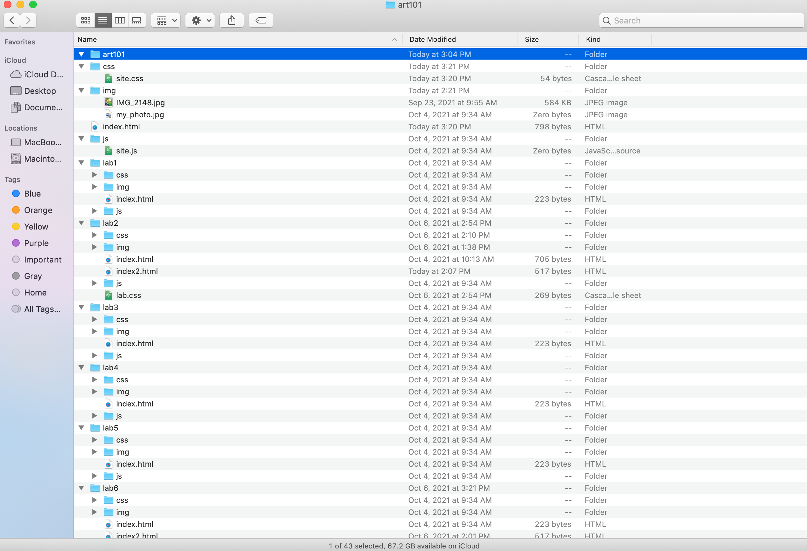

The idea of this lab was to further create a local file structure on my computer and add index.html files.
I had difficulty with making sure my index.html files were in the right location. I struggled with getting the things I coded to show up on my site.
You are viewing the index.html file I created. Below is a photo of the file structure that I made:
This is a screenshot of my file structure in Atom
This is a screenshot of my HTML code for my homepage
This is a screenshot of my index.html file in browser
This is a screenshot of my Lab 3 page HTML code
This is a screenshot of my art101/lab3/index.html as it appears in browser